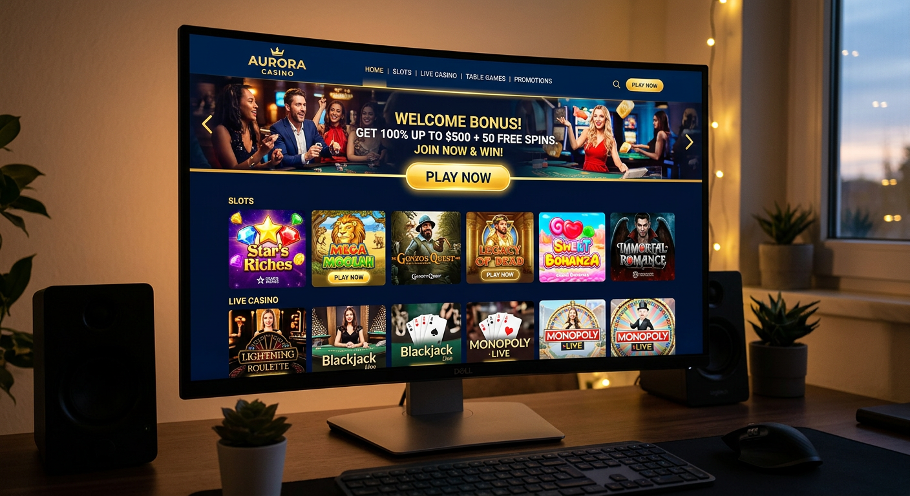
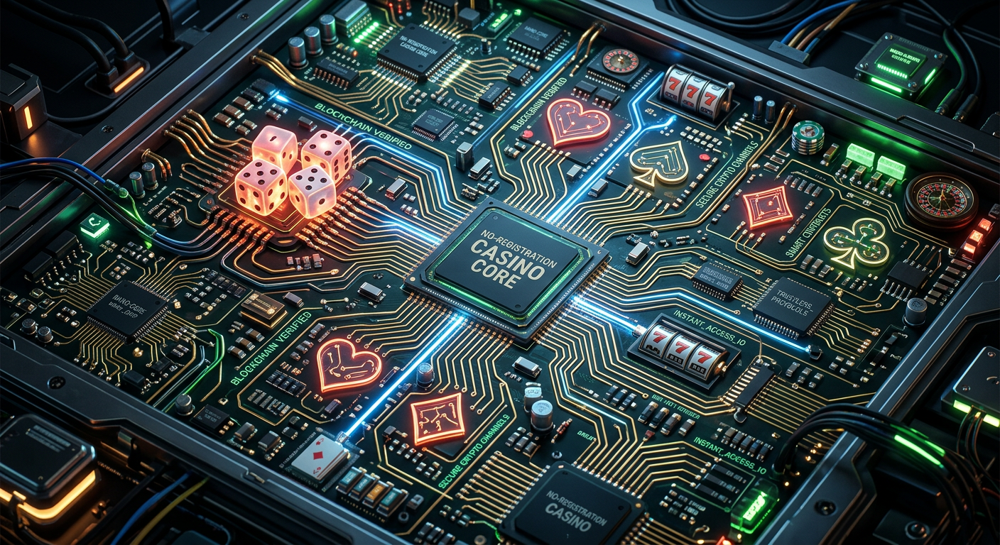
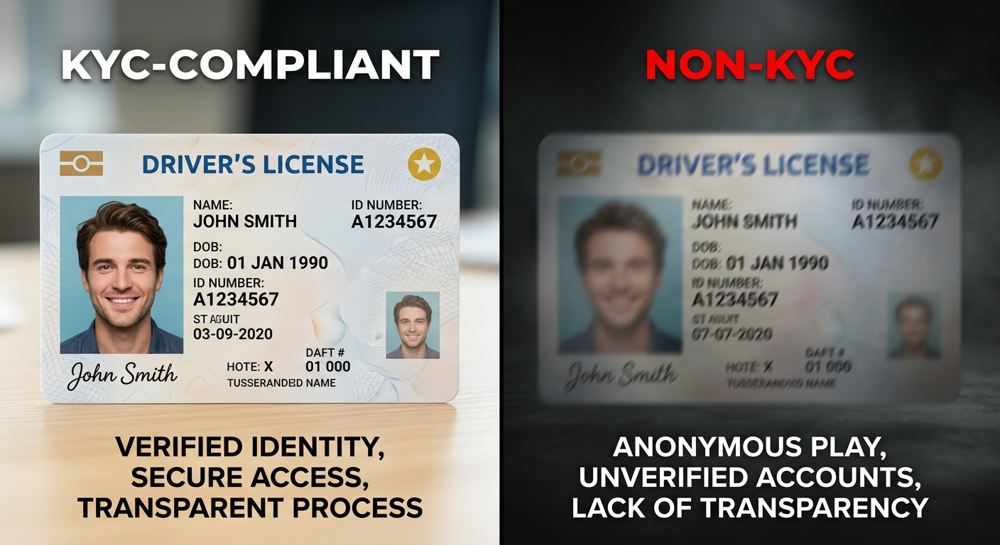
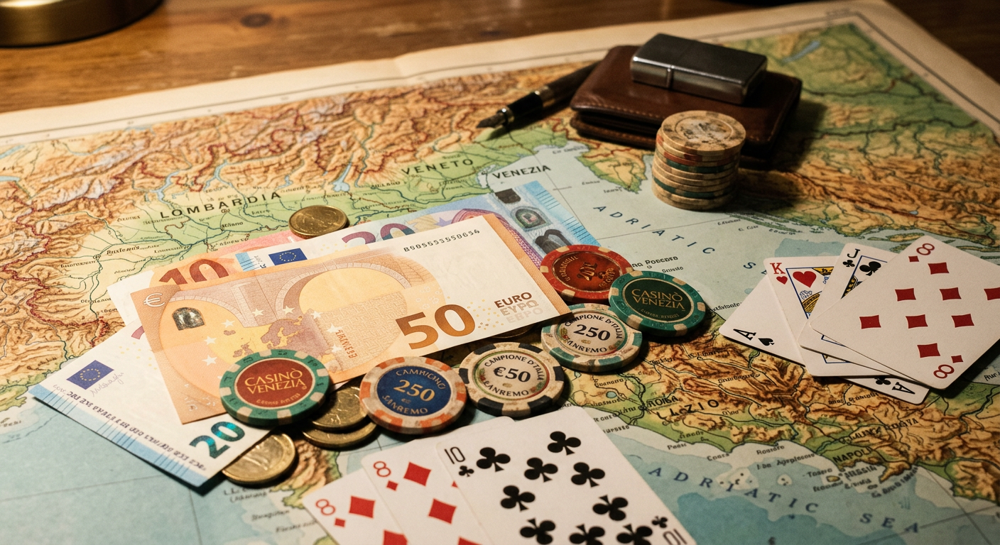

Casino Senza Documenti: Guida Completa ai Migliori Siti 2026
Nel panorama del gaming online del 2026, la rapidità e la privacy sono diventate le priorità assolute per i giocatori italiani. La ricerca di un casino senza documenti non è più solo una nicchia per pochi esperti, ma una tendenza consolidata che riflette il desiderio di un'esperienza immediata, libera dalle lungaggini burocratiche che hanno caratterizzato lo scorso decennio. In questa guida esploreremo le migliori piattaforme che permettono di giocare senza inviare pesanti file PDF della carta d'identità, analizzando le tecnologie che rendono tutto questo possibile e sicuro.
L'evoluzione tecnologica ha permesso l'integrazione di sistemi di pagamento intelligenti e l'uso di identità digitali decentralizzate. Oggi, nel 2026, l'utente medio non vuole più attendere 48 ore per la convalida del conto. La possibilità di accedere a un casino senza documenti rappresenta la frontiera della libertà digitale, dove il deposito e il prelievo avvengono in tempi record grazie a protocolli crittografici avanzati e licenze internazionali flessibili ma rigorose.
Cosa si intende per siti di gioco senza invio di file?
Quando parliamo di un casino senza documenti , ci riferiamo a piattaforme che non richiedono il caricamento manuale di foto o scansioni di documenti d'identità durante la fase di registrazione o prima del primo prelievo. Questo concetto si è evoluto drasticamente nel 2026, separandosi nettamente dal passato. In precedenza, la mancanza di documenti era spesso associata a siti poco sicuri; oggi, invece, è il risultato di processi di automazione bancaria o dell'uso di criptovalute.
Esistono principalmente due categorie di siti "senza scartoffie". La prima riguarda i portali che utilizzano sistemi come Trustly e il protocollo Pay N' Play, che verificano l'identità dell'utente direttamente tramite le credenziali bancarie. La seconda categoria riguarda i casinò basati su blockchain, dove l'indirizzo del wallet funge da identificativo unico, garantendo un anonimato pressoché totale. In entrambi i casi, l'obiettivo è semplificare il gioco senza sacrificare l'affidabilità dell'operatore.
Per approfondire le normative europee sulla protezione dei dati che influenzano questi processi, è possibile consultare le linee guida ufficiali sul sito della Commissione Europea. Comprendere come i dati vengono trattati nel 2026 è fondamentale per ogni giocatore consapevole che desidera navigare nei casino senza documenti in totale serenità.
Migliori Casino Senza Documenti: La Classifica Aggiornata 2026

La nostra redazione ha testato decine di piattaforme per identificare i leader del mercato attuale. Questi siti non solo offrono un accesso istantaneo, ma garantiscono anche i massimi standard di sicurezza informatica. Di seguito, i nomi che dominano la scena nel 2026.
| Brand | Bonus di Benvenuto | Punto di Forza | Link Sicuro |
|---|---|---|---|
| Millioner | 150% fino a 1000€ + 200 Giri Gratis | Velocità prelievi estrema | Gioca Ora |
| Roulettino | Bonus Cashback 20% settimanale | Nessun limite di puntata | Gioca Ora |
| Wyns | Pacchetto 3000€ sui primi 3 depositi | Vasta gamma di slot crypto | Gioca Ora |
| Kinbet | 100% fino a 500€ + 1 Bonus Crab | Interfaccia mobile eccellente | Gioca Ora |
| Dragonia | Bonus esclusivo senza deposito 50 FS | Assistenza 24/7 in italiano | Gioca Ora |
Wild Tokyo - Bonus elevati e prelievi rapidi
Il Wildtokyo Casinò rimane un punto di riferimento per chi cerca un casino senza documenti di alta qualità. Grazie a una licenza internazionale solida, permette di operare senza le classiche procedure di verifica asfissianti. Il sito è rinomato per la sua estetica cyberpunk, perfettamente in linea con il gusto dei giocatori del 2026, e per un catalogo di giochi che supera i 5000 titoli, inclusi tavoli live gestiti da AI.
Un aspetto che rende Wildtokyo Casinò unico è la gestione dei pagamenti. Utilizzando portafogli elettronici di nuova generazione, i prelievi vengono processati in meno di 15 minuti, un record assoluto per il settore. Questo elimina lo stress di dover inviare bollette o documenti d'identità per provare la propria residenza.
LamaBet - La scelta ideale per le criptovalute
LamaBet si è imposto nel 2026 come il re indiscusso delle transazioni crypto. Chi cerca un casino senza documenti per utilizzare Bitcoin troverà qui l'ambiente ideale. La piattaforma non richiede alcun dato personale: basta collegare il proprio wallet e si è pronti a puntare. Questo approccio garantisce che l'esperienza di gioco sia focalizzata esclusivamente sul divertimento.
Oltre a Bitcoin, LamaBet supporta decine di altcoin, offrendo commissioni di rete ridotte al minimo. La sicurezza è garantita da smart contract trasparenti che regolano le vincite, assicurando che ogni giro di slot sia verificabile sulla blockchain. È la quintessenza del gioco moderno e decentralizzato.
Mr. Pacho - Interfaccia moderna e gamification
Mr. Pacho non è solo un casino senza documenti , ma un'intera avventura interattiva. Il sito utilizza la gamification per premiare i giocatori costanti con oggetti virtuali e bonus esclusivi. Nel 2026, l'interfaccia di Mr. Pacho è stata ottimizzata per i visori VR, offrendo un'immersione totale nel mondo dei giochi da tavolo.
La registrazione su Mr. Pacho avviene tramite social login o identificazione rapida, bypassando le vecchie procedure di verifica manuale. Questo permette ai nuovi utenti di attivare il proprio bonus di benvenuto in pochi secondi, iniziando a giocare immediatamente alle slot più popolari del momento.
Come Funzionano i Casino Senza Documenti e Registrazione

Il meccanismo dietro un casino senza documenti si basa sulla fiducia tecnologica. Invece di chiedere all'utente di provare chi è tramite una carta d'identità cartacea, il casinò si affida a intermediari certificati. Questi intermediari hanno già verificato l'utente in precedenza (come una banca o un provider di identità digitale), quindi il casinò riceve una conferma di "utente verificato" senza mai toccare i dati sensibili o i documenti fisici.
Questa architettura non solo accelera il processo, ma aumenta anche la sicurezza dei dati personali. Non dovendo inviare file tramite email o caricarli su server centralizzati, il rischio di furto d'identità diminuisce drasticamente. Nel 2026, la protezione della privacy è diventata un diritto fondamentale, e queste piattaforme lo rispettano alla lettera.
Il sistema Pay N' Play (Trustly)
Introdotto anni fa, il sistema Pay N Play di Trustly ha raggiunto la sua piena maturità nel 2026. Funziona in modo estremamente semplice: quando effettui un deposito, Trustly trasmette al casinò i dati necessari (come la maggiore età) direttamente dal tuo conto bancario. Questo crea un account "ombra" in background senza che tu debba compilare alcun modulo.
L'uso di Trustly garantisce che i fondi siano sempre al sicuro e che i prelievi tornino istantaneamente sullo stesso conto utilizzato per il deposito. Molti casino online senza registrazione obbligatoria adottano questa tecnologia per offrire un servizio d'eccellenza, riducendo gli errori umani legati alla lettura manuale dei documenti.
L'uso dello SPID nei siti ADM
In Italia, l'integrazione dello SPID (Sistema Pubblico di Identità Digitale) ha rivoluzionato il settore dei siti ADM. Sebbene molti preferiscano il casino senza documenti di stampo internazionale, le piattaforme legali italiane permettono ora di registrarsi in un clic usando lo SPID. Questo elimina la necessità di inviare la foto del codice fiscale o della carta d'identità, poiché lo Stato garantisce già l'identità del cittadino.
Tuttavia, esiste ancora una differenza sostanziale tra l'uso dello SPID e il vero anonimato. Mentre lo SPID velocizza la registrazione, l'attività di gioco rimane tracciata dai registri nazionali. Per chi cerca una privacy più profonda, le alternative internazionali senza la verifica statale rimangono la scelta più gettonata nel 2026.
La procedura KYC: perché alcuni operatori la evitano?
KYC sta per "Know Your Customer" ed è un pilastro delle normative antiriciclaggio globali. Molti si chiedono come possa esistere un casino senza documenti se il KYC è obbligatorio. La risposta risiede nel modo in cui il KYC viene applicato. Gli operatori moderni utilizzano il "KYC automatico" o il "KYC basato su rischio".
Se un utente movimenta cifre contenute e utilizza metodi di pagamento tracciati alla fonte (come conti bancari europei), l'operatore può decidere di non richiedere ulteriori documenti. Questo approccio basato sul rischio permette di snellire l'esperienza per il 90% degli utenti, concentrando i controlli solo sulle transazioni sospette. In questo modo, il casino senza documenti riesce a operare legalmente pur offrendo una velocità senza precedenti.
"No documents" = no KYC? Facciamo chiarezza

È un errore comune pensare che "senza documenti" significhi assenza totale di controlli. Anche nei casino senza documenti più permissivi del 2026, esistono protocolli di sicurezza invisibili. Il sistema analizza l'indirizzo IP, il comportamento di gioco e la provenienza dei fondi per prevenire frodi. Pertanto, "No documents" = no KYC? Non esattamente. È più corretto dire: "No documents = Frictionless KYC".
Il KYC avviene dietro le quinte. Ad esempio, se utilizzi un Astromania Casinò, il sistema potrebbe verificare la tua posizione geografica tramite GPS o triangolazione di rete per assicurarsi che tu non stia giocando da un territorio proibito. Questo tipo di verifica tecnologica è molto più precisa e meno invasiva rispetto all'invio di un vecchio passaporto scaduto.
Perché molti utenti italiani evitano la verifica dell'identità

Nel 2026, le ragioni per cui gli italiani preferiscono un casino senza documenti sono molteplici. Al primo posto troviamo la diffidenza verso la gestione dei dati sensibili da parte di società private. Con l'aumento dei data breach globali, meno informazioni si condividono online, meglio è. Un'altra ragione fondamentale è la pigrizia digitale: cercare un documento, fotografarlo bene e caricarlo è un processo considerato ormai obsoleto.
Inoltre, c'è il fattore tempo. Chi desidera fare una partita veloce durante una pausa non vuole attendere ore per procedure di approvazione. La velocità d'azione è diventata un parametro di qualità per giudicare un operatore. Infine, molti utenti preferiscono mantenere le proprie abitudini di gioco separate dal proprio profilo bancario o istituzionale, optando per il casino senza documenti per una questione di discrezione personale.
Vantaggi di giocare su piattaforme ad accesso immediato
Giocare in un casino senza documenti offre benefici tangibili che vanno oltre la semplice privacy. Vediamone alcuni:
- Accesso Istantaneo: Dal momento del click alla prima scommessa passano meno di 60 secondi.
- Prelievi in tempo reale: Spesso i fondi vengono accreditati nello stesso momento in cui si preme il tasto "preleva".
- Minore esposizione ai rischi: Non caricando file, non c'è il rischio che i propri documenti finiscano nel dark web in caso di attacco hacker al sito.
- Bonus immediati: Spesso il bonus di benvenuto viene accreditato senza dover attendere la validazione del conto.
- Flessibilità: È possibile testare più piattaforme senza dover ripetere la trafila burocratica ogni volta.
Questi vantaggi rendono il gioco senza barriere l'opzione preferita dai "millennials" e dalla "Gen Z" che nel 2026 rappresentano il cuore pulsante del mercato dell'intrattenimento digitale.
Metodi di Pagamento per Transazioni Anonime e Veloci
La scelta del metodo di pagamento è il cuore pulsante di ogni casino senza documenti . Senza lo strumento giusto, l'anonimato e la velocità cadrebbero. Nel 2026, abbiamo assistito al declino delle carte di credito tradizionali in favore di soluzioni più agili e meno tracciabili dai sistemi bancari convenzionali.
Oltre alle già citate criptovalute, i voucher elettronici e le e-wallet decentralizzate dominano la scena. Questi strumenti permettono di ricaricare il conto in un casino senza documenti mantenendo un diaframma protettivo tra le proprie finanze personali e l'attività ludica.
Criptovalute: Bitcoin e l'anonimato totale
Il Bitcoin nel 2026 non è più solo una riserva di valore, ma una valuta di scambio corrente nel mondo del gaming. Utilizzare Bitcoin in un casino senza documenti garantisce che nessuna banca possa bloccare la transazione o chiedere spiegazioni sulla natura della spesa. La natura peer-to-peer della blockchain elimina gli intermediari, riducendo le tasse di transazione.
Altre valute come Ethereum o Solana offrono velocità ancora maggiori. Molti giocatori scelgono Diva Spin Casinò proprio per la sua integrazione nativa con i principali wallet crypto, permettendo una esperienza di gioco fluida e priva di intoppi tecnici. Il concetto di "wallet-to-wallet" è ormai lo standard per chi non vuole inviare alcun documento.
Portafogli Elettronici e Voucher
Per chi non è ancora a proprio agio con le crypto, i portafogli elettronici come MiFinity, Jeton o Revolut offrono un ottimo compromesso. Questi servizi agiscono come scudo, permettendo di depositare in un casino senza documenti senza mostrare gli estremi del proprio conto principale. Anche i voucher prepagati come Neosurf o Paysafecard rimangono popolari, consentendo depositi in contanti convertiti in codici digitali.
È importante notare che nel 2026 molti di questi servizi hanno implementato protocolli di verifica interna così robusti che il casinò accetta l'utente come "pre-verificato", eliminando la necessità di ulteriori procedure di verifica. È un ecosistema di fiducia reciproca tra provider di pagamento e operatori di gioco.
Giri Gratis senza documenti: Dove trovarli
Una delle domande più frequenti tra i giocatori è: "Posso ottenere giri gratuiti senza inviare la carta d'identità?". La risposta nel 2026 è un deciso sì. Molte piattaforme, come Lunubet Casinò e Spinempire Casinò, offrono promozioni di benvenuto che includono centinaia di free spins attivabili semplicemente confermando il numero di cellulare o l'indirizzo email.
Il concetto di Giri Gratis senza documenti si basa sulla volontà del casinò di far testare il proprio catalogo slot senza frizioni. Spesso, questi giri gratuiti sono legati a una specifica slot machine di tendenza, permettendo di vincere soldi veri che possono poi essere prelevati (previa soddisfazione dei requisiti di scommessa) senza mai aver caricato un solo file sul sito.
888Casino e WinBet: Come si sono evoluti nel 2026?
Anche i giganti storici come 888Casino e WinBet hanno dovuto adattarsi alla richiesta di velocità. Sebbene siano brand tradizionalmente legati a licenze nazionali rigide, nel 2026 hanno introdotto sezioni "Express". In queste aree, è possibile giocare a una selezione di titoli in modalità demo o con depositi minimi tramite sistemi di verifica istantanea.
888Casino, ad esempio, ha integrato un sistema di riconoscimento biometrico legato allo smartphone che funge da verifica immediata, quasi come un casino senza documenti . WinBet, d'altro canto, ha puntato molto sulla rapidità dei pagamenti tramite circuiti bancari aperti (Open Banking), cercando di colmare il gap con gli operatori puramente "no-doc" internazionali.
Sicurezza e Legalità: a cosa prestare attenzione?
Giocare in un casino senza documenti richiede un pizzico di attenzione in più. La sicurezza non è data dalla quantità di documenti richiesti, ma dalla reputazione dell'operatore e dalla tecnologia di crittografia utilizzata (SSL a 256 bit è lo standard nel 2026). È fondamentale verificare che il sito abbia una licenza valida, sia essa di Curacao, Malta o Kahnawake.
Un casinò affidabile mostrerà chiaramente i loghi degli enti certificatori e avrà termini e condizioni trasparenti. Non farti ingannare da siti che promettono bonus troppo belli per essere veri senza alcuna garanzia di pagamento. La regola d'oro è: se il sito è menzionato in guide autorevoli come questa, ha superato test rigorosi di affidabilità.
Per una panoramica completa sulla sicurezza informatica nel settore del gioco, suggeriamo di leggere gli approfondimenti su Forbes o altre testate economiche che analizzano il trend del fintech applicato al gambling.
Rischi e Considerazioni di Sicurezza nelle piattaforme estere
I Rischi e Considerazioni di Sicurezza non devono essere sottovalutati quando si esce dal circuito ADM. Il rischio principale di un casino senza documenti non è il furto d'identità (che anzi è ridotto), ma la difficoltà di ricorso legale in caso di dispute sui pagamenti. Essendo società spesso basate fuori dall'Unione Europea, la protezione del consumatore segue leggi diverse.
Per mitigare questi rischi, è consigliabile:
- Iniziare sempre con piccoli depositi per testare la velocità di prelievo.
- Utilizzare esclusivamente portafogli elettronici o criptovalute per non esporre il conto bancario principale.
- Leggere sempre le recensioni aggiornate del 2026 su forum specializzati.
- Assicurarsi che il casinò offra strumenti di gioco responsabile (limiti di deposito, auto-esclusione).
Tipologie di Bonus Disponibili Senza Verifica
Il panorama dei bonus in un casino senza documenti nel 2026 è estremamente variegato. Non esistendo il blocco della verifica manuale, i bonus sono spesso erogati in tempo reale. Ecco cosa puoi aspettarti:
- Bonus senza deposito: Piccole somme o giri gratis per iniziare.
- Match Bonus: Una percentuale sul primo deposito (es. 100% o 200%).
- Bonus Crab: Una funzione speciale presente in siti come Kinbet, dove puoi "pescare" premi extra ogni giorno.
- Cashback settimanale: Il rimborso di una parte delle perdite, molto comune nei casino crypto.
- Programmi VIP: Livelli di fedeltà che offrono limiti di prelievo più alti e manager dedicati.
Un esempio di eccellenza è Wonderluck Casinò, che offre un pacchetto di benvenuto modulare a seconda del metodo di pagamento scelto, premiando particolarmente chi utilizza tecnologie che non richiedono la verifica manuale tradizionale.
📌 Consiglio di Luca Moretti, il nostro scrittore esperto:
"Nel 2026, la vera libertà nel gioco online non è solo non inviare documenti, ma scegliere piattaforme che rispettano il tempo del giocatore. Il mio consiglio è di puntare su quei casino senza documenti che offrono prelievi istantanei tramite protocolli blockchain. Non solo proteggete la vostra privacy, ma avrete la certezza che le vincite siano vostre in pochi secondi. Ricordate però: la velocità non deve mai andare a discapito della prudenza. Giocate sempre responsabilmente e fissate dei limiti prima di iniziare."
Giocare senza registrazione è top: Ecco perché
L'espressione "giocare senza registrazione è top" è diventata un mantra nel 2026. Questo perché elimina l'attrito psicologico dell'inizio. Spesso, la voglia di giocare svanisce di fronte a lunghi form da compilare. Un casino senza documenti che permette l'accesso tramite Pay N Play o Crypto Wallet trasforma il gioco in un'attività "on-demand", simile a come guardiamo un film su Netflix.
Inoltre, l'assenza di un account tradizionale significa che non riceverai spam infinito via email o SMS molesti, a meno che tu non decida esplicitamente di iscriverti a una newsletter. Questa pulizia e rispetto per lo spazio digitale dell'utente è ciò che definisce il successo dei siti moderni.
Giocare senza scartoffie: Il cambio di paradigma nel 2026
Siamo passati dall'era della burocrazia cartacea all'era dell'autenticazione fluida. Giocare senza scartoffie significa che il sistema si fida della tecnologia anziché di un pezzo di plastica fotografato male. Questo cambio di paradigma ha spinto anche gli sviluppatori di software a creare giochi più leggeri e ottimizzati per dispositivi mobili, poiché l'intera esperienza di gioco deve essere veloce quanto l'accesso al sito.
Nei casino senza documenti di oggi, tutto è pensato per l'efficienza. Dalle interfacce minimaliste alla ricerca intelligente dei giochi, l'utente è al centro di un ecosistema dove il "tempo" è la valuta più preziosa. Chi ancora richiede procedure di verifica lunghe 48 ore è destinato a scomparire dal mercato entro la fine del decennio.
Conclusioni: il futuro del gioco online in Italia
Il 2026 segna un punto di non ritorno. Il casino senza documenti è diventato lo standard aureo per chi cerca privacy, velocità e innovazione. Sebbene le normative italiane cerchino di tenere il passo con soluzioni come lo SPID, l'attrazione verso le piattaforme internazionali rimane forte grazie alla loro capacità di adattarsi istantaneamente alle nuove tecnologie come le criptovalute e l'identità decentralizzata.
Scegliere uno dei siti consigliati nella nostra classifica, come Millioner o Dragonia, significa entrare nel futuro del gaming online. Avrai la garanzia di un trattamento di alto livello, bonus generosi come il Bonus Crab e la tranquillità di non dover mai condividere i tuoi dati sensibili se non strettamente necessario per la tua sicurezza.
Domande Frequenti (FAQ)
È legale giocare in un casino senza documenti?
Sì, è legale se l'operatore possiede una licenza internazionale valida. Molti casino senza documenti operano sotto licenze di Curacao o Malta, che sono riconosciute a livello globale e offrono alti standard di protezione per i giocatori europei.
Posso davvero prelevare le vincite senza inviare foto del documento?
Assolutamente sì. Utilizzando metodi come le criptovalute o il sistema Pay N Play, i prelievi vengono autorizzati automaticamente in base alla verifica effettuata alla fonte (wallet o banca), bypassando la necessità di invio file manuale.
Quali sono i rischi di questi siti?
Il rischio principale è scegliere siti non recensiti o privi di licenza. Seguendo le nostre indicazioni e scegliendo brand affidabili come Wyns o Kinbet, i rischi sono ridotti al minimo, paragonabili a quelli di qualsiasi altra transazione online sicura.
Esistono bonus senza deposito in questi casinò?
Sì, molti offrono giri gratuiti o piccoli crediti all'iscrizione rapida. È un modo eccellente per testare la piattaforma senza rischiare i propri fondi e senza dover superare complicate procedure di validazione iniziale.
Il sistema Pay N Play funziona in Italia nel 2026?
Il sistema Pay N Play è ampiamente disponibile in tutta Europa e, grazie alla standardizzazione bancaria del 2026, molti istituti italiani sono ora compatibili, permettendo depositi e prelievi istantanei senza documenti.